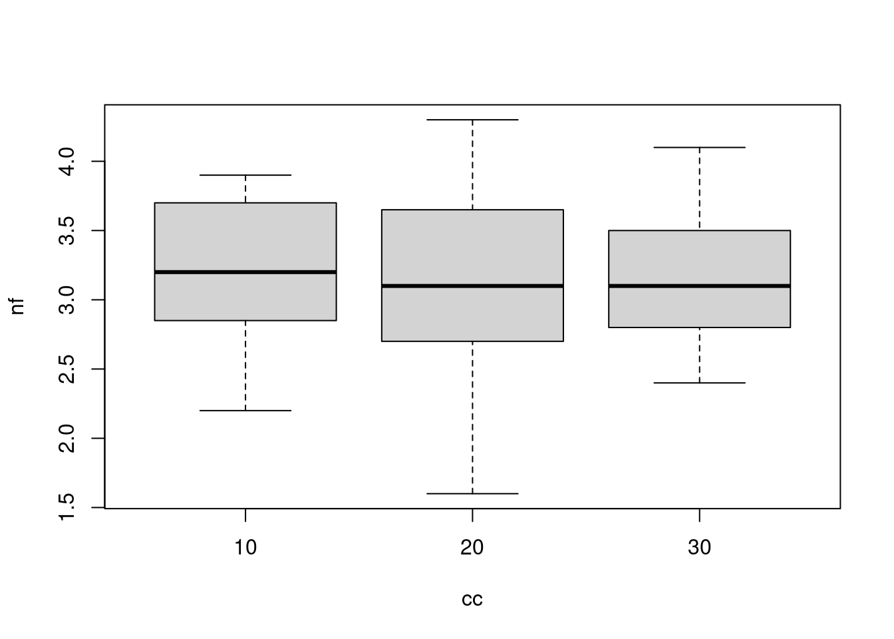
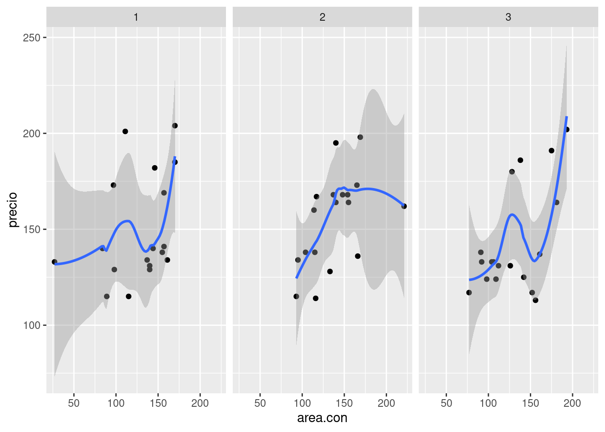

Código 3
Módulo 1- Unidad 1.1
dgonzalez
Introducción
La visualización de datos es una de partes más importantes del análisis de datos, que permite de manera gráfica representar la información con fines de poder
Algunas consideraciones
| Tipo de variable | Tipos de escala | Tipo de gráfico | Sintaxis R |
|---|---|---|---|
| Cualitativa | Nominal | diagrama de torta | pie(table(x)) |
| Ordinal | diagrama de barras | barplot(table(x)) | |
| Cuantitativa | De intervalo | diagrama de tallos y hojas | stem(x) |
| hist(x) | hist(x) | ||
| De razón | diagrama de puntos | plot(x,y) | |
| diagrama de densidad | density(x) | ||
| diagrama de cajas | boxplot(x) | ||
| diagrama de linea | plot(x, type=“l”) | ||
Variable cualitativa-nominal
1. Gráfico de tortas
cc=c(20, 10, 20, 20, 20, 20, 20, 20, 20, 30, 20, 20, 20, 10, 30, 20, 20, 30, 20,
30, 30, 20, 10, 30, 20, 20, 30, 30, 10, 20, 10, 20, 20, 20, 10, 20, 10, 20,
20, 30, 30, 30, 10, 30, 20, 20, 20, 20, 20, 20, 10, 20, 30, 30, 10, 10, 10,
20, 10, 20, 10, 30, 20, 10, 20, 30, 10, 30, 30, 30, 20, 30, 30, 30, 30, 30,
30, 20, 10, 30, 10, 20, 20, 10, 20, 20, 20, 20, 10, 20)
t1=table(cc)
pie(t1)
cc=c(20, 10, 20, 20, 20, 20, 20, 20, 20, 30, 20, 20, 20, 10, 30, 20, 20, 30, 20,
30, 30, 20, 10, 30, 20, 20, 30, 30, 10, 20, 10, 20, 20, 20, 10, 20, 10, 20,
20, 30, 30, 30, 10, 30, 20, 20, 20, 20, 20, 20, 10, 20, 30, 30, 10, 10, 10,
20, 10, 20, 10, 30, 20, 10, 20, 30, 10, 30, 30, 30, 20, 30, 30, 30, 30, 30,
30, 20, 10, 30, 10, 20, 20, 10, 20, 20, 20, 20, 10, 20)
labs=c("Ing. Mecánica","Ing. Civil ","Ing.Sistemas")
pct=round(table(cc)/sum(table(cc))*100)
labs=paste(labs, pct);labs=paste(labs, "%", sep = " ")
t1=table(cc)
pie(t1,
labels=labs,
main=" Distribución por carrera")Variable cualitativa-ordinal
2.Gráfico de barras
ev=table(rbinom(90,5,0.70))
barplot(ev)
ev=table(rbinom(90,5,0.70))
names(ev)=c("MR","R","B","MB","E")
barplot(ev, col=c("red","yellow","orange","green","blue"),
main = "Evaluación proceso de inducción",
las=1)
3. Gráfico de barras 2
conteo <- table(mtcars$vs, mtcars$gear)
barplot(conteo)
counts <- table(mtcars$vs, mtcars$gear)
rownames(counts)=c("Montor en linea", "Motor en V")
barplot(counts, main="Número de cambios adelante por Tipo de motor",
xlab="Número de cambios adelante ",
col=c("dodgerblue3","orange"),
legend = rownames(counts),
las=1)Variables cuantitativas
4. Diagrama de tallos y hojas
nf=c(4.1, 2.7, 3.1, 3.2, 3.0, 3.2, 2.0, 2.4, 1.6, 3.2, 3.1, 2.6, 2.0, 2.4, 2.8,
3.3, 4.0, 3.4, 3.0, 3.1, 2.7, 2.7, 3.0, 3.8, 3.2, 2.2, 3.5, 3.5, 3.8, 3.5,
3.9, 4.2, 4.3, 3.9, 3.2, 3.5, 3.5, 3.7, 4.1, 3.7, 3.5, 3.6, 3.2, 3.1, 3.4,
3.0, 3.0, 3.0, 2.7, 1.7, 3.6, 2.1, 2.4, 3.0, 3.1, 2.5, 2.5, 3.6, 2.2, 2.4,
3.1, 3.3, 2.7, 3.7, 3.0, 2.7, 3.0, 3.2, 3.1, 2.4, 3.0, 2.7, 2.5, 3.0, 3.0,
3.0, 3.2, 3.1, 3.8, 4.1, 3.7, 3.5, 3.0, 3.7, 3.7, 4.1, 3.7, 3.9, 3.7, 2.0)
# Diagrama de tallos y hojas
stem(nf)##
## The decimal point is at the |
##
## 1 | 67
## 2 | 00012244444
## 2 | 555677777778
## 3 | 0000000000000011111111222222223344
## 3 | 555555566677777777888999
## 4 | 01111235. Histograma
hist(nf)
h1=hist(nf,
main = "Nota final matemáticas fundamentales",
xlab = "nota", ylab="frecuencias absolutas",
labels=TRUE,
col="dodgerblue3",
ylim = c(0,30))
abline(v=3,col="red")
6. Diagrama de densidad
nf=c(4.1, 2.7, 3.1, 3.2, 3.0, 3.2, 2.0, 2.4, 1.6, 3.2, 3.1, 2.6, 2.0, 2.4, 2.8,
3.3, 4.0, 3.4, 3.0, 3.1, 2.7, 2.7, 3.0, 3.8, 3.2, 2.2, 3.5, 3.5, 3.8, 3.5,
3.9, 4.2, 4.3, 3.9, 3.2, 3.5, 3.5, 3.7, 4.1, 3.7, 3.5, 3.6, 3.2, 3.1, 3.4,
3.0, 3.0, 3.0, 2.7, 1.7, 3.6, 2.1, 2.4, 3.0, 3.1, 2.5, 2.5, 3.6, 2.2, 2.4,
3.1, 3.3, 2.7, 3.7, 3.0, 2.7, 3.0, 3.2, 3.1, 2.4, 3.0, 2.7, 2.5, 3.0, 3.0,
3.0, 3.2, 3.1, 3.8, 4.1, 3.7, 3.5, 3.0, 3.7, 3.7, 4.1, 3.7, 3.9, 3.7, 2.0)
plot(density(nf))
plot(density(nf),
main="Distribución notas de matemátias fundamentales",
col="dodgerblue3",
lwd=5,
las=1,
xlab = "Nota",
ylab = "Densidad")
7. Diagrama de cajas
boxplot(nf)boxplot(nf, main="Nota final matemáticas fundamentales",
col="dodgerblue3",
las=1)
abline(h=3, col="red")
8. Comparación diagrama de cajas
boxplot(nf~cc)
nf=c(4.1, 2.7, 3.1, 3.2, 3.0, 3.2, 2.0, 2.4, 1.6, 3.2, 3.1, 2.6, 2.0, 2.4, 2.8,
3.3, 4.0, 3.4, 3.0, 3.1, 2.7, 2.7, 3.0, 3.8, 3.2, 2.2, 3.5, 3.5, 3.8, 3.5,
3.9, 4.2, 4.3, 3.9, 3.2, 3.5, 3.5, 3.7, 4.1, 3.7, 3.5, 3.6, 3.2, 3.1, 3.4,
3.0, 3.0, 3.0, 2.7, 1.7, 3.6, 2.1, 2.4, 3.0, 3.1, 2.5, 2.5, 3.6, 2.2, 2.4,
3.1, 3.3, 2.7, 3.7, 3.0, 2.7, 3.0, 3.2, 3.1, 2.4, 3.0, 2.7, 2.5, 3.0, 3.0,
3.0, 3.2, 3.1, 3.8, 4.1, 3.7, 3.5, 3.0, 3.7, 3.7, 4.1, 3.7, 3.9, 3.7, 2.0)
cc=c(20, 10, 20, 20, 20, 20, 20, 20, 20, 30, 20, 20, 20, 10, 30, 20, 20, 30, 20,
30, 30, 20, 10, 30, 20, 20, 30, 30, 10, 20, 10, 20, 20, 20, 10, 20, 10, 20,
20, 30, 30, 30, 10, 30, 20, 20, 20, 20, 20, 20, 10, 20, 30, 30, 10, 10, 10,
20, 10, 20, 10, 30, 20, 10, 20, 30, 10, 30, 30, 30, 20, 30, 30, 30, 30, 30,
30, 20, 10, 30, 10, 20, 20, 10, 20, 20, 20, 20, 10, 20)
labs=c("Ing. Mecánica","Ing. Civil ","Ing.Sistemas")
boxplot((nf~cc),main="Nota final matemáticas fundamentales por carrera",
col="dodgerblue3")
abline(h=3, col="red")
abline(h=4, col="blue")
9. Gráfico de series de tiempo
t=1:300 ; x=w=rnorm(300,0,1); x<-w; for(t in 2:300) x[t]<-x[t-1]+w[t]
plot(x, type="l",
main="Número de pasajeros",
col="dodgerblue3",
lwd = 4)
10. Resumen
x=rnorm(100,100,20)
y=rnorm(100,100,25)
z=rbinom(100,4,0.30)
t=1:100
pie(table(z))
barplot(table(z))
stem(x)
hist(x)
boxplot(x)
plot(x,y)
plot(t,y, type="l")
plot(density(x))Paquetes adicionales
Hasta el momento se ha utilizado R base para la elaboración de gráficos, a continuación se presentan algunos paquetes que mejoran la construcción de gráficos y su visualización :
ggplot2.
Este paquete de R permite la construcción de gráficos utilizando para ello una “grámatica” de los grafocos, la cual incorpora componentes como : los datos (data), un conjunto de coordenadas ( ), una serie de geometrias (geoms)
Componentes de un gráfico en ggplot2:
Data: capa de los datos
Aesthetics: capa estetica (aes), definimos las variables a utilizar en el gráfico
Geometries: capa de geometrias, se define el tipo de gráfica a realizar
Facets: capa de facetas, permite detallar la gráfica por categorias
Statistics: capa de estadística, permite agregar modelos
*Coordinates: capa de coordenadas, permite ajustar las escalas de los ejes
Theme: capas de características del gráfico que no dependen de los datos
Para empezar, inicialmente se instalar el paquete
install.packages("ggplo2")Y luego habilitarlo para su uso
library(ggplot2)Se empieza con el primero de los lienzo, donde se declara la data que vamos a utilizar

casas=read.csv("data/casas.csv")
fig=ggplot(data=casas)
fig
Como segundo paso se definen las variables que se van a utilizar en la construcción del gráfico

fig=ggplot(data=casas, aes(x=areaconst , y=precio))
fig
Luego de tener definida la base y las variables a utilizar se indica la geometria a utilizar, en este caso se trata de puntos

fig=ggplot(data=casas, aes(x=areaconst , y=precio))+
geom_point()
fig
Otros elementos a utilizar son :
facet que nos ayuda a visualizar el gráfico por factor, construyendo la gráfica para cada mes en este caso

fig=ggplot(data=casas, aes(x=areaconst , y=precio))+
geom_point() + facet_wrap(~ mes)
fig
stat permite realizar modelos lineales y mostrar asi la relación existente entre las variables

fig=ggplot(data=casas, aes(x=areaconst , y=precio))+
geom_point() + facet_wrap(~ mes)+stat_smooth(method = "loess" , formula =y ~ x)
fig
coordinates la cual permite ajustar los ejes , por ejemplo podemos determian el rango de que queremos presentar en la gráfica

fig=ggplot(data=casas, aes(x=areaconst , y=precio)) + geom_point() +
facet_wrap(~ mes) +
stat_smooth(method = "loess" , formula =y ~ x) +
coord_cartesian(xlim = c(1500,3000))
fig
themes finalmente la capa del tema o fondo de la gráfica

fig=ggplot(data=casas, aes(x=areaconst , y=precio)) + geom_point() +
facet_wrap(~ mes) +
stat_smooth(method = "loess" , formula =y ~ x) +
coord_cartesian(xlim = c(1500,3000)) +
theme_classic()
fig
Otros ejemplos de ggplor2
casas$mes=as.factor(casas$mes)
fig = ggplot(data=casas, aes(x=precio, y=mes)) +
geom_boxplot(fill="lightSalmon",
color="black")+
geom_point(color="blue")+
ggtitle("Precio de casas por mes")+
labs(x="miles de pesos " , y="mes")
fig 
ggplot(casas, aes(antigüedad)) +
geom_histogram(bins = 7,fill="#69b3a2", color="#e9ecef", alpha=0.9)+
theme_minimal() +
labs(x = "años", y = "frecuencia absoluta") +
ggtitle("Antigüedad de las casas")